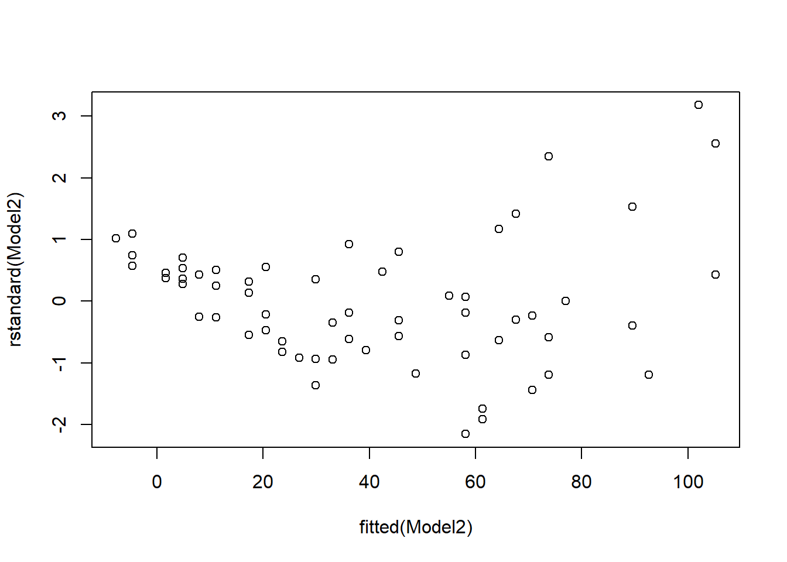
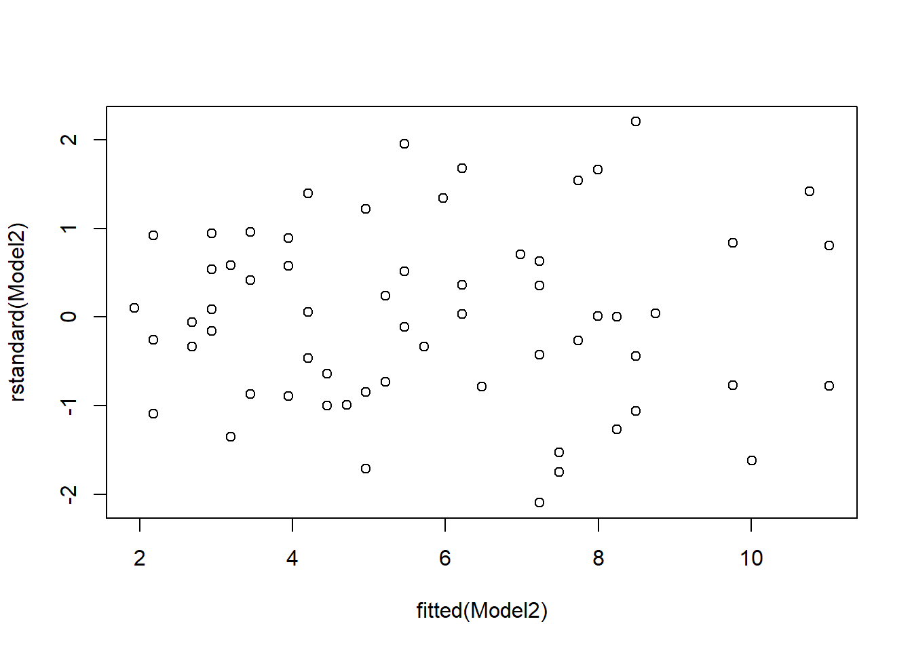

3 Example 2: power transformation on \(y\)
The stopping.csv file contains 63 observations of cars. In these observations, two variables were recorded, namely the speed of cars when the brakes were applied (in mile per hour) and the stopping distance (in feet). Our question of interest is determine if there is a relationship between the speed of cars and the distance taken to stop.
3.1 Exploratory analysis
The scatterplot of distance (\(Y\)) against the speed (\(x\)) in Figure 3.1 (left) shows that the variables do not appear to be linearly related. A possible remedy is to transform \(Y\) into \(\sqrt{Y}\). A new scatterplot, Figure 3.1 (right), is obtained by using the command:
Figure 3.1: Left: scatterplot of Distance versus Speed. Right: scatterplot of square root of Distance versus Speed.
As the relationship now appears to be linear, we will build a simple linear regression model between \(\sqrt{\text{distance}}\) (as new \(Y\)) and speed as \[Y_i = \alpha + \beta x_i + \epsilon_i,\quad \epsilon_i \sim N(0,\sigma^2), \quad i = 1,\ldots, 63,\] which can be fitted by using the command:
Model2 <- lm(sqrt(Distance) ~ Speed, data = stopping)3.2 Assumption checking
Figure 3.2 gives the residual plots after fitting a simple linear regression model to the original variables.

Figure 3.2: Residual plots from fitting a simple linear regression model to original variables. Top: Standardised residuals versus fitted values. Bottom: Normal probability (Q-Q) plot.
The plots show the problems of curvature, non-constant variance and non-normality, indicating that the wrong type of model was used.
Figure 3.3 gives the residual plots after fitting a simple linear regression model to the transformed variables.

Figure 3.3: Residual plots from fitting a simple linear regression model to transformed variables. Top: Standardised residuals versus fitted values. Bottom: Normal probability (Q-Q) plot.
The curvature disappears and the variance is almost constant across the range of fitted values. The normality assumption, however, remains to be invalid. This is not ideal but, on the positive side, the estimates of parameters will not be affected and hence we can still use the model to describe the relationship between variables and make predictions.
3.2.1 Regression output
summary(Model2)##
## Call:
## lm(formula = sqrt(Distance) ~ Speed, data = stopping)
##
## Residuals:
## Min 1Q Median 3Q Max
## -1.4879 -0.5487 0.0098 0.5291 1.5545
##
## Coefficients:
## Estimate Std. Error t value Pr(>|t|)
## (Intercept) 0.918283 0.197406 4.652 1.82e-05 ***
## Speed 0.252568 0.009246 27.317 < 2e-16 ***
## ---
## Signif. codes: 0 '***' 0.001 '**' 0.01 '*' 0.05 '.' 0.1 ' ' 1
##
## Residual standard error: 0.7193 on 61 degrees of freedom
## Multiple R-squared: 0.9244, Adjusted R-squared: 0.9232
## F-statistic: 746.2 on 1 and 61 DF, p-value: < 2.2e-16QUESTION:
- Write down the equation of the fitted model.
The regression equation is \[\sqrt{\text{Distance}} = 0.918 + 0.253 \cdot \text{Speed} \]
- Based on the regression equation in (a), comment on the relationship between speed and square root of distance. In addition, pick a speed value yourself and predict the distance for this speed.
The estimated parameter of \(0.253\) suggests the square root of distance is positively linearly related to speed. As the speed increases by 1 MPH, the expected square root of distance increases by 0.253 feet.
When predicting the value of the response, we back transform the variable as \(\text{Distance} = (0.918 + 0.253 \cdot \text{Speed})^2\). For example, if the speed is 20 MPH, the predicted distance is \((0.918+0.252\cdot 20)^2 \approx 35.64\) feet.
Note that our model is built only for speed ranging from 4 to 40. It would be unwise to make predictions outside this range in the absence of other information.